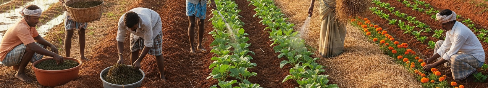

Watershed management
Comprehensive watershed development focusing on soil and water conservation, groundwater recharge, and sustainable land management.
Building climate-resilient communities through environmental conservation and sustainable development — across Tamil Nadu since 2000.
Our environmental mission
Coodu Trust is the only empanelled Field Agency in Tamil Nadu for the Department of Water Resources, Ministry of Jal Shakti, Government of India.
For over 25 years, Coodu Trust has been at the forefront of environmental conservation and climate resilience in Tamil Nadu. Our comprehensive approach has transformed 640 micro-watersheds across 24 districts, benefiting 38,16,091 individuals across 534 panchayats.
Our proven track record includes treating 1,79,486 hectares of wasteland, planting 26,93,250 trees, and managing environmental programs spanning watershed development, afforestation, water resource management, and climate change adaptation. Through science-based solutions and community empowerment, we build resilient ecosystems that support both nature and human livelihoods.
Focus areas
Comprehensive watershed development focusing on soil and water conservation, groundwater recharge, and sustainable land management.

Large-scale tree plantation drives, forest restoration, and agroforestry programs to enhance green cover and biodiversity.

Rainwater harvesting, water conservation, and sustainable water management systems for long-term water security.

Soil health improvement, erosion control, and sustainable land use practices to maintain agricultural productivity.

Protecting and restoring natural habitats, wildlife conservation, and promoting ecological balance in rural landscapes.

Building community resilience to climate impacts through adaptation strategies, mitigation measures, and sustainable development.
Get involved
Help us create climate-resilient communities and protect natural resources for future generations. Your support makes a lasting impact.